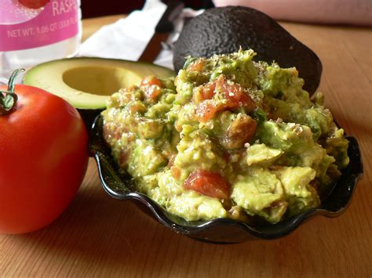

Home
Guacamole

Description
Make this delicious creamy guacamole for your next party or taco night!
Ingredients
- 2 ripe avocados, peeled and pitted
- 1 small onion, finely chopped
- 1 ripe tomato
- 1 clove garlic, minced
- 1 lime, juiced
- salt and pepper to taste
Steps
- Gather all ingredients.
- Mash avocado in a medium serving bowl.
- Stir in onion, tomato, and garlic.
- Season with lime juice and salt and pepper to taste.
- Cover and chill guacamole for 30 minutes to allow flavors to blen.